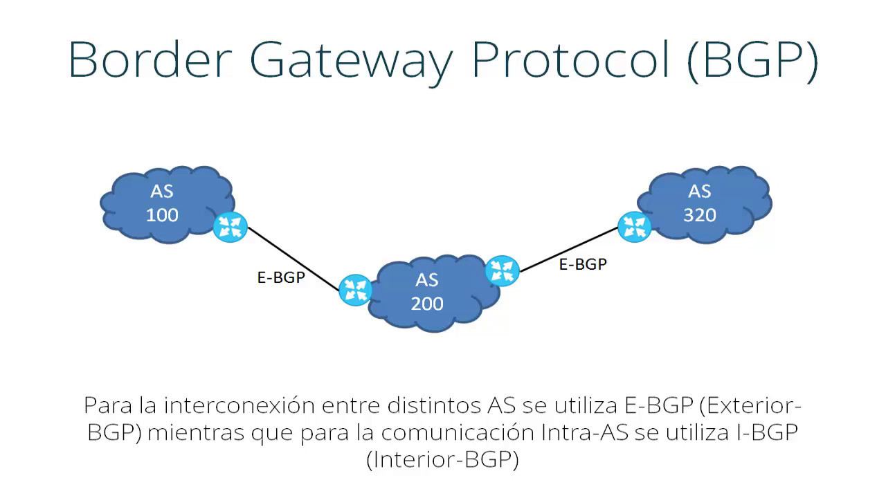

Border Gateway Protocol
It is a protocol by which routing information is exchanged between autonomous systems. For example, service providers registered on the Internet are usually made up of several autonomous systems and for this case a protocol such as BGP is necessary. Between the autonomous systems of the ISPs their route tables are exchanged through the BGP protocol. This exchange of routing information is done between the external routers of each autonomous system, which must be compatible with BGP. It is the most widely used protocol for networks with the intention of configuring an Exterior Gateway Protocol.The way to configure and delimit the information that the BGP protocol contains and exchanges is by creating what is known as an autonomous system or AS. Each will have internal connections or sessions (iBGP), as well as external sessions (eBGP).
Introduction
BGP plays a critical role in communications on the Internet. It facilitates the exchange of information on IP networks and communication between autonomous systems (AS). Therefore, BGP is an inter-domain (between autonomous systems) and intra-domain (within the same autonomous system) protocol.The BGP protocol is used to exchange information by establishing a communication session between the border routers of autonomous systems. To achieve a reliable delivery of the information, use is made of a TCP-based communication session on port number 179. This session must be kept active because both ends of the communication periodically exchange and update information. At the beginning, each router sends all its routing information to the neighbor and then only new routes, updates or elimination of previously transmitted routes will be sent. In addition, messages are periodically sent to guarantee connectivity.
Relations between AS
The relationships that exist between different autonomous systems are mainly voluntary interconnection (peering) and transit. Basically, a transit relationship is one that exists between a provider and a customer, so that the customer pays for the Internet resources that the provider can provide. Peering relationships are usually not paid and consist of a link to communicate two autonomous systems in order to reduce costs, latency, packet loss and obtain redundant paths. Peering is often done with autonomous systems that are potentially similar in size. Therefore, no peering is done with a potential client since one of the two autonomous systems would benefit.
Message types
There are four types of BGP messages which are as follows:
- OPEN: used to establish a BGP session once the TCP connection has been established. Certain parameters that characterize that session are usually negotiated. For example, it is very possible that the members of the session do not have the same version of BGP so it is important to indicate the version number in this message.
- UPDATE: it is an update message, very important in BGP operations as it contains announcements of new prefixes. Update messages will be generated each time a new best route is determined for a certain destination or there is a modification on an existing one.
- KEEPALIVE: once the BGP session is active, a message is sent periodically to keep the connection alive or KEEPALIVE to confirm that the other end is still active in the BGP session. A maximum wait time is generally agreed upon during the initial exchange of OPEN messages. The KEEPALIVE is usually about once every third of the standby time, but not more than once every second. KEEPALIVE messages should not be generated if the timeout is zero, since in that case it is understood that the session is completely reliable.
- NOTIFICATION: it is sent when closing a BGP session and this happens when an error occurs that requires it to be closed. So it is a message that allows you to report nothing.
Package format
BGP packets have a 19-byte header, consisting of the following fields:
- A 16-byte Marker field: to detect loss of synchronization or authentication of incoming BGP messages,
- A 2-byte field of Packet Length (Length): which specifies the length of the BGP message in bytes (the length cannot be less than 19 bytes of the header without data or greater than 4096), and
- A 1-byte field of Type: that indicates the type of message. The data following the packet header can be 0 to 4,077 bytes, to give a maximum possible length of 4,096.